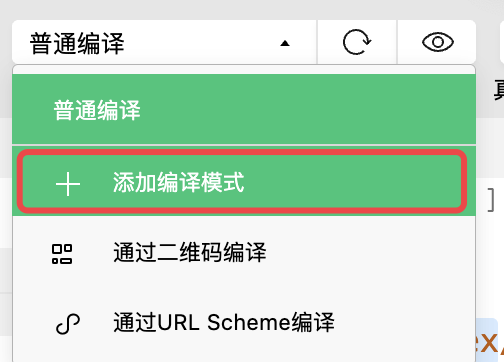
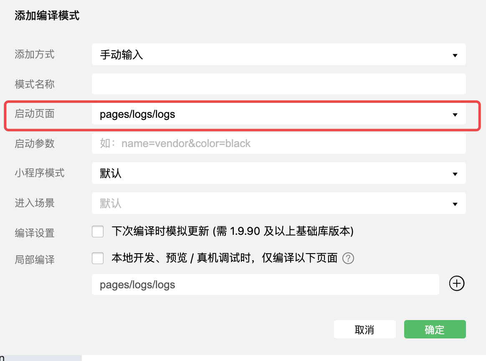
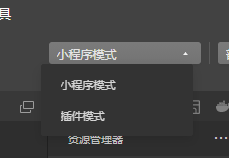
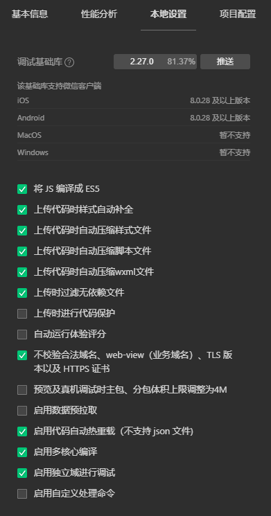

# 8. 小程序代码的构成
https://developers.weixin.qq.com/miniprogram/dev/framework/
学习思路，从起步 - 小程序代码构成 开始，如果见到有链接，就跳转过去学习完整的知识
# 8.1 JSON 配置
JSON 是一种数据格式，并不是编程语言，在小程序中，JSON 扮演的静态配置的角色
# 8.1.1 小程序的配置 app.json
app.json 是当前小程序的全局配置，包括了小程序的所有页面路径、界面表现、网络超时时间、底部 tab 等
https://developers.weixin.qq.com/miniprogram/dev/framework/config.html
https://developers.weixin.qq.com/miniprogram/dev/reference/configuration/app.html
小程序根目录下的 app.json 文件用来对微信小程序进行全局配置。文件内容为一个 JSON 对象，有以下属性：
| 属性 | 类型 | 必填 | 描述 | 最低版本 |
|---|---|---|---|---|
| entryPagePath | string | 否 | 小程序默认启动首页 | |
| pages | string[] | 是 | 页面路径列表 | |
| window | Object | 否 | 全局的默认窗口表现 | |
| tabBar | Object | 否 | 底部 tab 栏的表现 | |
| networkTimeout | Object | 否 | 网络超时时间 | |
| debug | boolean | 否 | 是否开启 debug 模式，默认关闭 | |
| functionalPages | boolean | 否 | 是否启用插件功能页，默认关闭 | 2.1.0 |
| subpackages | Object[] | 否 | 分包结构配置 | 1.7.3 |
| workers | string | 否 | Worker 代码放置的目录 | 1.9.90 |
| requiredBackgroundModes | string[] | 否 | 需要在后台使用的能力，如「音乐播放」 | |
| plugins | Object | 否 | 使用到的插件 | 1.9.6 |
| preloadRule | Object | 否 | 分包预下载规则 | 2.3.0 |
| resizable | boolean | 否 | PC 小程序是否支持用户任意改变窗口大小（包括最大化窗口）；iPad 小程序是否支持屏幕旋转。默认关闭 | 2.3.0 |
| usingComponents | Object | 否 | 全局自定义组件配置 | 开发者工具 1.02.1810190 |
| permission | Object | 否 | 小程序接口权限相关设置 | 微信客户端 7.0.0 |
| sitemapLocation | string | 是 | 指明 sitemap.json 的位置 | |
| style | string | 否 | 指定使用升级后的 weui 样式 | 2.8.0 |
| useExtendedLib | Object | 否 | 指定需要引用的扩展库 | 2.2.1 |
| entranceDeclare | Object | 否 | 微信消息用小程序打开 | 微信客户端 7.0.9 |
| darkmode | boolean | 否 | 小程序支持 DarkMode | 2.11.0 |
| themeLocation | string | 否 | 指明 theme.json 的位置，darkmode 为 true 为必填 | 开发者工具 1.03.2004271 |
| lazyCodeLoading | string | 否 | 配置自定义组件代码按需注入 | 2.11.1 |
| singlePage | Object | 否 | 单页模式相关配置 | 2.12.0 |
| supportedMaterials | Object | 否 | 聊天素材小程序打开相关配置 | 2.14.3 |
| serviceProviderTicket | string | 否 | 定制化型服务商票据 | |
| embeddedAppIdList | string[] | 否 | 半屏小程序 appId | 2.20.1 |
| halfPage | Object | 否 | 视频号直播半屏场景设置 | 2.18.0 |
| debugOptions | Object | 否 | 调试相关配置 | 2.22.1 |
| enablePassiveEvent | Object 或 boolean | 否 | touch 事件监听是否为 passive | 2.24.1 |
| resolveAlias | Object | 否 | 自定义模块映射规则 |
- entryPagePath
设置小程序默认的启动页面，如果不作设置，那么将会取 pages 数组 的第一项为默认启动项，开发过程中，一般不建议这么使用，你可以使用开发者工具中 添加编译模式 快速解决问题


- pages
用于指定小程序由哪些页面组成，每一项都对应一个页面的 路径（含文件名） 信息。文件名不需要写文件后缀，框架会自动去寻找对应位置的 .json , .js , .wxml , .wxss 四个文件进行处理。
如何给小程序快速添加页面，写好页面后直接保存即可
{ | |
"pages":[ | |
"pages/home/home", | |
"pages/index/index", | |
"pages/logs/logs", | |
"pages/kind/kind", | |
"pages/cart/cart", | |
"pages/user/user" | |
], | |
... | |
} |
- window
用于设置小程序的状态栏、导航条、标题、窗口背景色。
| 属性 | 类型 | 默认值 | 描述 | 最低版本 |
|---|---|---|---|---|
| navigationBarBackgroundColor | HexColor | #000000 | 导航栏背景颜色，如 #000000 | |
| navigationBarTextStyle | string | white | 导航栏标题颜色，仅支持 black / white | |
| navigationBarTitleText | string | 导航栏标题文字内容 | ||
| navigationStyle | string | default | 导航栏样式，仅支持以下值： default 默认样式 custom 自定义导航栏，只保留右上角胶囊按钮。参见注 2。 | iOS/Android 微信客户端 6.6.0，Windows 微信客户端不支持 |
| backgroundColor | HexColor | #ffffff | 窗口的背景色 | |
| backgroundTextStyle | string | dark | 下拉 loading 的样式，仅支持 dark / light | |
| backgroundColorTop | string | #ffffff | 顶部窗口的背景色，仅 iOS 支持 | 微信客户端 6.5.16 |
| backgroundColorBottom | string | #ffffff | 底部窗口的背景色，仅 iOS 支持 | 微信客户端 6.5.16 |
| enablePullDownRefresh | boolean | false | 是否开启全局的下拉刷新。 详见 Page.onPullDownRefresh | |
| onReachBottomDistance | number | 50 | 页面上拉触底事件触发时距页面底部距离，单位为 px。 详见 Page.onReachBottom | |
| pageOrientation | string | portrait | 屏幕旋转设置，支持 auto / portrait / landscape 详见 响应显示区域变化 | 2.4.0 (auto) / 2.5.0 (landscape) |
| restartStrategy | string | homePage | 重新启动策略配置 | 2.8.0 |
| initialRenderingCache | string | 页面初始渲染缓存配置，支持 static / dynamic | 2.11.1 | |
| visualEffectInBackground | string | none | 切入系统后台时，隐藏页面内容，保护用户隐私。支持 hidden / none | 2.15.0 |
| handleWebviewPreload | string | static | 控制预加载下个页面的时机。支持 static / manual / auto | 2.15.0 |
{ | |
..., | |
"window": { | |
"navigationBarBackgroundColor": "#f66", | |
"navigationBarTextStyle": "white", | |
"navigationBarTitleText": "嗨购", | |
"navigationStyle": "default", | |
"homeButton": true, | |
"backgroundColor": "#123123", | |
"backgroundTextStyle": "dark", | |
"enablePullDownRefresh": true, | |
"pageOrientation": "portrait" | |
}, | |
.... | |
} |
- tabBar
如果小程序是一个多 tab 应用（客户端窗口的底部或顶部有 tab 栏可以切换页面），可以通过 tabBar 配置项指定 tab 栏的表现，以及 tab 切换时显示的对应页面。
| 属性 | 类型 | 必填 | 默认值 | 描述 | 最低版本 |
|---|---|---|---|---|---|
| color | HexColor | 是 | tab 上的文字默认颜色，仅支持十六进制颜色 | ||
| selectedColor | HexColor | 是 | tab 上的文字选中时的颜色，仅支持十六进制颜色 | ||
| backgroundColor | HexColor | 是 | tab 的背景色，仅支持十六进制颜色 | ||
| borderStyle | string | 否 | black | tabbar 上边框的颜色， 仅支持 black / white | |
| list | Array | 是 | tab 的列表，详见 list 属性说明，最少 2 个、最多 5 个 tab | ||
| position | string | 否 | bottom | tabBar 的位置，仅支持 bottom / top | |
| custom | boolean | 否 | false | 自定义 tabBar，见详情 | 2.5.0 |
其中 list 接受一个数组，只能配置最少 2 个、最多 5 个 tab。tab 按数组的顺序排序，每个项都是一个对象，其属性值如下：
| 属性 | 类型 | 必填 | 说明 |
|---|---|---|---|
| pagePath | string | 是 | 页面路径，必须在 pages 中先定义 |
| text | string | 是 | tab 上按钮文字 |
| iconPath | string | 否 | 图片路径，icon 大小限制为 40kb，建议尺寸为 81px * 81px，不支持网络图片。 当 position 为 top 时，不显示 icon。 |
| selectedIconPath | string | 否 | 选中时的图片路径，icon 大小限制为 40kb，建议尺寸为 81px * 81px，不支持网络图片。 当 position 为 top 时，不显示 icon。 |
如何获取项目需要的图片
https://www.iconfont.cn/
搜索图标 - 加入购物车 - 点击购物车 - 下载素材
输入颜色 #333333 和 #ff6666。选择大小为 81px，下载 png 图片即可
{ | |
..., | |
"tabBar": { | |
"color": "#333", | |
"selectedColor": "#f66", | |
"backgroundColor": "#efefef", | |
"borderStyle": "black", | |
"list": [ | |
{ | |
"pagePath": "pages/home/home", | |
"text": "首页", | |
"iconPath": "resources/tabBar/home.png", | |
"selectedIconPath": "resources/tabBar/home_active.png" | |
}, | |
{ | |
"pagePath": "pages/kind/kind", | |
"text": "分类", | |
"iconPath": "resources/tabBar/kind.png", | |
"selectedIconPath": "resources/tabBar/kind_active.png" | |
}, | |
{ | |
"pagePath": "pages/cart/cart", | |
"text": "购物车", | |
"iconPath": "resources/tabBar/cart.png", | |
"selectedIconPath": "resources/tabBar/cart_active.png" | |
}, | |
{ | |
"pagePath": "pages/user/user", | |
"text": "我的", | |
"iconPath": "resources/tabBar/user.png", | |
"selectedIconPath": "resources/tabBar/user_active.png" | |
} | |
] | |
}, | |
... | |
} |
- networkTimeout
各类网络请求的超时时间，单位均为毫秒。
{ | |
..., | |
"networkTimeout": { | |
"request": 6000, | |
"connectSocket": 4000, | |
"uploadFile": 600000, | |
"downloadFile": 6000000 | |
}, | |
.... | |
} |
- debug
可以在开发者工具中开启 debug 模式，在开发者工具的控制台面板，调试信息以 info 的形式给出，其信息有 Page 的注册，页面路由，数据更新，事件触发等。可以帮助开发者快速定位一些常见的问题。
{
...,
"debug": false,
....
}
底部 tab 选项卡对应的页面，会自动添加类似 vue 中的 keep-alive 的功能，原来的 activated 和 deactivated 分别对应小程序中的。onShow 和 onHide
- subpackages
启用分包加载时，声明项目分包结构。
分包加载：
- 整个小程序所有分包大小不超过 20M
- 单个分包 / 主包大小不能超过 2M
使用分包
独立分包
{"pages/result/result"{"pages/register/register"]}开启 debug 模式，添加编译模式，调试分包的页面，观察 独立分包和 非独立分包的效果，通过控制台的 console 查看
分包预下载
开发者可以通过配置，在进入小程序某个页面时，由框架自动预下载可能需要的分包，提升进入后续分包页面时的启动速度。
做一个电商类型的小程序，大部分的用户一定回去搜索，所以可以把搜索相关业务写到分包，当用户打开主包时，预下载 搜索的分包
{...,{"pages/result/result"{"pages/register/register"]}"pckSearch"]}}
整体的全局配置文件如下：
{ | |
"pages": [ | |
"pages/home/home", | |
"pages/kind/kind", | |
"pages/cart/cart", | |
"pages/user/user", | |
"pages/detail/detail", | |
"pages/index/index", | |
"pages/logs/logs" | |
], | |
"window": { | |
"navigationBarBackgroundColor": "#f66", | |
"navigationBarTextStyle": "white", | |
"navigationBarTitleText": "嗨购", | |
"navigationStyle": "default", | |
"backgroundColor": "#efefef", | |
"backgroundTextStyle": "dark", | |
"restartStrategy": "homePageAndLatestPage", | |
"visualEffectInBackground": "hidden" | |
}, | |
"tabBar": { | |
"color": "#333", | |
"selectedColor": "#f66", | |
"backgroundColor": "#efefef", | |
"borderStyle": "black", | |
"list": [ | |
{ | |
"pagePath": "pages/home/home", | |
"text": "首页", | |
"iconPath": "tabBar/home.png", | |
"selectedIconPath": "tabBar/home_active.png" | |
}, | |
{ | |
"pagePath": "pages/kind/kind", | |
"text": "分类", | |
"iconPath": "tabBar/kind.png", | |
"selectedIconPath": "tabBar/kind_active.png" | |
}, | |
{ | |
"pagePath": "pages/cart/cart", | |
"text": "购物车", | |
"iconPath": "tabBar/cart.png", | |
"selectedIconPath": "tabBar/cart_active.png" | |
}, | |
{ | |
"pagePath": "pages/user/user", | |
"text": "我的", | |
"iconPath": "tabBar/user.png", | |
"selectedIconPath": "tabBar/user_active.png" | |
} | |
] | |
}, | |
"networkTimeout": { | |
"request": 6000, | |
"connectSocket": 6000, | |
"uploadFile": 60000, | |
"downloadFile": 60000 | |
}, | |
"subpackages": [ | |
{ | |
"root": "packageSearch", | |
"name": "packageSearch", | |
"independent": true, | |
"pages": [ | |
"pages/search/search", | |
"pages/result/result" | |
] | |
}, | |
{ | |
"root": "packageUser", | |
"name": "packageUser", | |
"pages": [ | |
"pages/register/register", | |
"pages/login/login" | |
] | |
} | |
], | |
"preloadRule": { | |
"pages/home/home": { | |
"network": "all", | |
"packages": ["packageSearch"] | |
} | |
}, | |
"debug": false, | |
"style": "v2", | |
"sitemapLocation": "sitemap.json" | |
} |
# 8.1.2 工具配置 project.config.json
# 项目配置文件
- 项目根目录中的
project.config.json和project.private.config.json文件可以对项目进行配置， project.private.config.json中的相同设置优先级高于project.config.json- 可以在
project.config.json文件中配置公共的配置，在project.private.config.json配置个人的配置，可以将project.private.config.json写到.gitignore避免版本管理的冲突。 project.private.config.json中有的字段，开发者工具内的设置修改会优先覆盖project.private.config.json的内容。如在project.private.config.json有appid字段，那么在 详情 - 基本信息 中修改了 appid，会写到project.private.config.json中，不会覆盖掉project.config.json的appid字段的内容- 开发阶段相关的设置修改优先同步到
project.private.config.json中，但与最终编译产物有关的设置无法在project.private.config.json中生效，界面上的改动也不会同步到project.private.config.json文件中。详见 表格 是否允许私有设置。
# 一级字段
可以在项目根目录使用 project.config.json 文件对项目进行配置。
| 字段名 | 类型 | 说明 |
|---|---|---|
| miniprogramRoot | Path String | 指定小程序源码的目录 (需为相对路径) |
| qcloudRoot | Path String | 指定腾讯云项目的目录 (需为相对路径) |
| pluginRoot | Path String | 指定插件项目的目录 (需为相对路径) |
| cloudbaseRoot | Path String | 云开发代码根目录 (需为相对路径) |
| cloudfunctionRoot | Path String | 云函数代码根目录 (需为相对路径) |
| cloudfunctionTemplateRoot | Path String | 云函数本地调试请求模板的根目录 (需为相对路径) |
| cloudcontainerRoot | Path String | 云托管代码根目录 (需为相对路径) |
| compileType | String | 编译类型 |
| setting | Object | 项目设置 |
| libVersion | String | 基础库版本 |
| appid | String | 项目的 appid |
| projectname | String | 项目名字 |
| packOptions | Object | 打包配置选项 |
| debugOptions | Object | 调试配置选项 |
| watchOptions | Object | 文件监听配置设置 |
| scripts | Object | 自定义预处理 |
| staticServerOptions | Object | 仅在小游戏项目中有效 |
# compileType
编译类型作用于开发工具的以下设置

有效值
| 名字 | 说明 |
|---|---|
| miniprogram | 当前为普通小程序项目 |
| plugin | 当前为小程序插件项目 |
# setting
项目的编译设置，可以指定以下设置。部分设置无法在 project.private.config.json 中生效
以下字段可以开发者工具 - 详情 - 本地设置可以对应上

| 字段名 | 类型 | 允许私有设置 [1] | 说明 |
|---|---|---|---|
| es6 | Boolean | 否 | 是否启用 es6 转 es5 [2] |
| enhance | Boolean | 否 | 是否打开增强编译 [2] |
| postcss | Boolean | 否 | 上传代码时样式是否自动补全 |
| minified | Boolean | 否 | 上传代码时是否自动压缩脚本文件 |
| minifyWXSS | Boolean | 否 | 上传代码时是否自动压缩样式文件 |
| minifyWXML | Boolean | 否 | 上传代码时是否自动压缩 WXML 文件 |
| uglifyFileName | Boolean | 否 | 上传时进行代码保护 |
| ignoreUploadUnusedFiles | Boolean | 否 | 上传时是否过滤无依赖文件 |
| autoAudits | Boolean | 是 | 是否自动运行体验评分 |
| urlCheck | Boolean | 是 | 是否检查安全域名和 TLS 版本 |
| compileHotReLoad | Boolean | 是 | 是否开启文件保存后自动热重载 |
| preloadBackgroundData | Boolean | 是 | 小程序加载时是否数据预拉取 |
| lazyloadPlaceholderEnable | Boolean | 是 | 是否启用懒注入占位组件调试 [3] |
| useStaticServer | Boolean | 是 | 仅在小游戏项目有效，是否开启静态资源服务器 [4] |
| bigPackageSizeSupport | Boolean | 是 | 预览及真机调试的时主包、分包体积上限调整为 4M（小程序）、8M（小游戏） |
以下字段是开发者工具的隐式设置
| 字段名 | 类型 | 允许私有设置 [1] | 说明 |
|---|---|---|---|
| babelSetting | Object | 否 | 增强编译下 Babel 的配置项 |
| useCompilerPlugins | String [] 或 false | 否 | 编译插件配置 |
| disableUseStrict | Boolean | 否 | 将 JS 编译成 ES5 时，是否禁用严格模式 |
| uploadWithSourceMap | Boolean | 否 | 上传时是否带上 sourcemap（默认为 true） |
| localPlugins | Boolean | 否 | 在小游戏插件项目中，是否启用 “以本地目录为插件资源来源”[5] 特性 |
| packNpmManually | Boolean | 否 | 是否手动配置构建 npm 的路径 |
| packNpmRelationList | Array | 否 | 仅 packNpmManually 为 true 时生效，详细参考构建 npm 文档 |
| coverView | Boolean | 是 | 是否使用工具渲染 CoverView |
| ignoreDevUnusedFiles | Boolean | 是 | 预览、真机调试和本地模拟器等开发阶段是否过滤无依赖文件（默认为 true） |
| checkInvalidKey | Boolean | 是 | 是否展示 JSON 文件校验错误信息 |
| showShadowRootInWxmlPanel | Boolean | 是 | 是否开启调试器 WXML 面板展示 shadow-root |
| useIsolateContext | Boolean | 是 | 是否开启小程序独立域调试特性 [6] |
| useMultiFrameRuntime | Boolean | 是 | 是否开启模拟器预先载入小程序的某些资源 [7]。此设定为 false 时会导致 useIsolateContext 失效 |
| useApiHook | Boolean | 是 | 是否启用 API Hook 功能 [8] |
| useApiHostProcess | Boolean | 是 | 是否在额外的进程处理一些小程序 API [9] |
| useLanDebug | Boolean | 是 | 仅在小游戏有效，是否开启局域网调试服务器 |
| enableEngineNative | Boolean | 是 | 是否在游戏引擎项目中开启支持引用 node 原生模块的底层加速特性 |
| showES6CompileOption | Boolean | 是 | 是否在本地设置中展示传统的 ES6 转 ES5 开关（对应 es6），增强编译开关 （对应 enhance） |
注 1: 开发阶段相关的设置修改优先同步到 project.private.config.json 中，但最终编译产物有关的设置无法在 project.private.config.json 中生效，界面上的改动也不会同步到 project.private.config.json 文件中。
注 2: es6 和 enhance 需同时为 true/false，对应于 将 JS 编译成 ES5
注 3: (懒注入占位组件调试) 开启按需注入后在项目设置面板中会出现对应的勾选项，开启之后，按需注入的组件将会停止注入，页面停止在占位组件状态，便于调试自定义占位组件。
注 4: (静态资源服务器) 可以托管项目本地的静态资源，主要用于在预览时测试小游戏真机资源加载的效果。
注 5: (以本地目录为插件资源来源) 启用此特性后，工具将停止从线上获取小游戏插件包内容，并将检验本地相应目录的文件完整性。仅对小游戏插件项目有效。要以本地磁盘目录作为插件的资源来源，需要同时在小游戏插件项目的 game.json 中配置相关的属性。
注 6: (小程序独立域调试) 一种新的小程序内部代码的执行方式，仅影响工具侧的调试过程。未来将取代传统的执行方式并成为默认选择。仅在 2.11.1 及以上基础库有效。关闭此特性可能有助于规避一些调试中遇到的未知报错。
注 7: (预先载入小程序的某些资源) 开启此内部特性后，调试时小程序的重新载入可能会更快一些。此设定不影响真机和实际运行效果。
注 8: (API Hook 功能) 关闭此内部特性可能导致工具的某些调试功能（例如 mock）失效。此设定不影响真机运行效果。
注 9: (额外进程) 开启此内部特性后，部分 API 的调用会被移到单独的进程以减轻工具主进程的负担。此设定不影响真机运行效果。
# useCompilerPlugins
编译插件配置，目前支持编译插件有 typescript、less、sass
如
{ | |
"setting": { | |
"useCompilerPlugins": [ | |
"typescript", | |
"less" | |
] | |
} | |
} |
表示项目支持直接使用 typescript 和 less
# babelSetting
将 JS 编译为 ES5 时 Babel 的配置项，其中可以指定以下设置
| 字段名 | 类型 | 说明 |
|---|---|---|
| outputPath | String | Babel 辅助函数的输出目录，默认为 @babel/runtime |
| ignore | Array <String> | 配置需要跳过 Babel 编译 (包括代码压缩) 处理的文件或目录 |
注 1: 指定文件路径外，还可以指定目录，详见下面项目配置示例
# libVersion
可以指定项目运行的基础库具体的版本号 也可以 project.config.json 的 libVersion 指定以下值
| 值 | 说明 |
|---|---|
| latest | 最新的非灰度中的基础库 |
| trial | 最新的基础库 |
| widelyUsed | 使用比例最高的基础库 |
以上值在 project.private.config.json 文件中无效，因为手动在开发者工具 - 详情 - 本地设置中改变基础库的版本，会覆盖掉 project.private.config.json 的 libVersion 字段
# scripts
指定自定义预处理的命令
| 名字 | 说明 |
|---|---|
| beforeCompile | 编译前预处理命令 |
| beforePreview | 预览前预处理命令 |
| beforeUpload | 上传前预处理命令 |
# packOptions
packOptions 用以配置项目在打包过程中的选项。打包是预览、上传时对项目进行的必须步骤。
目前可以指定 packOptions.include 字段，用以配置打包时需要强制带上的文件（仅限后缀名白名单内）或者文件夹，匹配的这些文件或文件夹将一定会出现在预览或上传的结果内。（该字段的优先级高于 packOptions.ignore ）
同时可以指定 packOptions.ignore 字段，用以配置打包时对符合指定规则的文件或文件夹进行忽略，以跳过打包的过程，这些文件或文件夹将不会出现在预览或上传的结果内。
packOptions.ignore 和 packOptions.include 为一对象数组，对象元素类型如下：
| 字段名 | 类型 | 说明 |
|---|---|---|
| value | string | 路径 1 或取值 |
| type | string | 类型 |
其中， type 可以取的值为 folder 、 file 、 suffix 、 prefix 、 regexp 2、 glob 2，分别对应文件夹、文件、后缀、前缀、正则表达式、Glob 规则。所有规则值都会自动忽略大小写。
注 1: value 字段的值若表示文件或文件夹路径，以小程序目录 ( miniprogramRoot ) 为根目录。
注 2: regexp 、 glob 仅 1.02.1809260 及以上版本工具支持。
示例配置如下。
{ | |
"packOptions": { | |
"ignore": [{ | |
"type": "file", | |
"value": "test/test.js" | |
}, { | |
"type": "folder", | |
"value": "test" | |
}, { | |
"type": "suffix", | |
"value": ".webp" | |
}, { | |
"type": "prefix", | |
"value": "test-" | |
}, { | |
"type": "glob", | |
"value": "test/**/*.js" | |
}, { | |
"type": "regexp", | |
"value": "\\.jsx$" | |
}] | |
} | |
} |
注：这部分设置的更改可能需要重新打开项目才能生效。
# debugOptions
debugOptions 用以配置在对项目代码进行调试时的选项。
目前可以指定 debugOptions.hidedInDevtools 字段，用以配置调试时于调试器 Sources 面板隐藏源代码的文件。
hidedInDevtools 的配置规则和 packOptions.ignore 是一致的。
当某个 js 文件符合此规则时，调试器 Sources 面板中此文件源代码正文内容将被隐藏，显示为：
// xxx.js has been hided by project.config.json |
注：配置此规则后，可能需要关闭并重新打开项目才能看到效果。
项目配置示例：
{ | |
"miniprogramRoot": "./src", | |
"qcloudRoot": "./svr", | |
"setting": { | |
"postcss": true, | |
"es6": true, | |
"minified": true, | |
"urlCheck": false, | |
"checkSiteMap": true, | |
"enhance": true, | |
"babelSetting": { | |
"ignore": [ | |
"utils/something_not_to_process.js", | |
"miniprogram_npm/*", | |
"utils/already_handle/*" | |
] | |
} | |
}, | |
"packOptions": { | |
"ignore": [] | |
}, | |
"debugOptions": {} | |
} |
# watchOptions
watchOptions 用以配置项目中可以被忽略展示和监听文件变化的文件匹配规则。 部分项目（如游戏项目）其项目文件可能成千上万，其中大部分可能是资源文件，并不是小程序和小游戏代码中关心展示的文件，这些文件在工具开发时可以不需要被开发者关注，因此工具可以增加一个配置去忽略指定的文件和目录，从而不对这些文件进行文件遍历获取和文件内容变更的监听（watch），从而提高开启工具的速度以及减少工具打开占用的内存。
目前可以指定 watchOptions.ignore 字段，用以配置工具时对符合指定规则的文件或文件夹进行忽略 ( 忽略的文件将不展示在编辑器文件列表和对该文件进行监听 ），以避免展示和监听项目中不必要的文件内容（这些文件或文件夹不需要去关心文件变化）
watchOptions.ignore 为 glob pattern 字符串数组，具体支持如下：
- 匹配 0 到多个字符
? 匹配一个字符
[...] 匹配一个字符列表，类似正则表达式的字符列表
!(pattern|pattern|pattern) 反向匹配括号内的模式
?(pattern|pattern|pattern) 匹配 0 或 1 个括号内的模式
+(pattern|pattern|pattern) 匹配至少 1 个括号内的模式
*(pattern|pattern|pattern) 匹配 0 到多个括号内的模式
@(pattern|pat*|pat?erN) 精确匹配括号内的模式
** 匹配 0 到多个子目录，递归匹配子目录
示例配置如下。
如下所示
{ | |
"description": "项目配置文件", | |
"watchOptions": { | |
"ignore": [ | |
"utils/util.js", | |
"libs/**/**" | |
] | |
} | |
} |
注 1 : watchOptions.ignore 数组中的值若表示文件或文件夹路径，以项目根目录为基准目录。 注 2 : 由于文件遍历和 watch 都是在项目启动时执行，因此如果修改了 watchOptions 需要重新打开项目 注 3: 该配置仅 1.02.1910220 及以上版本工具支持。
# 8.1.3 页面配置 page.json
页面配置 page.json
| 属性 | 类型 | 默认值 | 描述 | 最低版本 |
|---|---|---|---|---|
| navigationBarBackgroundColor | HexColor | #000000 | 导航栏背景颜色，如 #000000 | |
| navigationBarTextStyle | string | white | 导航栏标题颜色，仅支持 black / white | |
| navigationBarTitleText | string | 导航栏标题文字内容 | ||
| navigationStyle | string | default | 导航栏样式，仅支持以下值： default 默认样式 custom 自定义导航栏，只保留右上角胶囊按钮。 | iOS/Android 微信客户端 7.0.0，Windows 微信客户端不支持 |
| backgroundColor | HexColor | #ffffff | 窗口的背景色 | |
| backgroundTextStyle | string | dark | 下拉 loading 的样式，仅支持 dark / light | |
| backgroundColorTop | string | #ffffff | 顶部窗口的背景色，仅 iOS 支持 | 微信客户端 6.5.16 |
| backgroundColorBottom | string | #ffffff | 底部窗口的背景色，仅 iOS 支持 | 微信客户端 6.5.16 |
| enablePullDownRefresh | boolean | false | 是否开启当前页面下拉刷新。 详见 Page.onPullDownRefresh | |
| onReachBottomDistance | number | 50 | 页面上拉触底事件触发时距页面底部距离，单位为 px。 详见 Page.onReachBottom | |
| pageOrientation | string | portrait | 屏幕旋转设置，支持 auto / portrait / landscape 详见 响应显示区域变化 | 2.4.0 (auto) / 2.5.0 (landscape) |
| disableScroll | boolean | false | 设置为 true 则页面整体不能上下滚动。 只在页面配置中有效，无法在 app.json 中设置 | |
| usingComponents | Object | 否 | 页面自定义组件配置 | 1.6.3 |
| initialRenderingCache | string | 页面初始渲染缓存配置，支持 static / dynamic | 2.11.1 | |
| style | string | default | 启用新版的组件样式 | 2.10.2 |
| singlePage | Object | 否 | 单页模式相关配置 | 2.12.0 |
| restartStrategy | string | homePage | 重新启动策略配置 | 2.8.0 |
| handleWebviewPreload | string | static | 控制预加载下个页面的时机。支持 static / manual / auto | 2.15.0 |
| visualEffectInBackground | string | 否 | 切入系统后台时，隐藏页面内容，保护用户隐私。支持 hidden / none ，若对页面单独设置则会覆盖全局的配置，详见 全局配置 | 2.15.0 |
| enablePassiveEvent | Object 或 boolean | 否 | 事件监听是否为 passive，若对页面单独设置则会覆盖全局的配置，详见 全局配置 | 2.24.1 |
// pages/home/home.json
{ | |
"navigationBarTitleText": "嗨购-首页", | |
"usingComponents": {} | |
} |
# 8.2 WXML 模版
WXML（WeiXin Markup Language）是框架设计的一套标签语言，结合基础组件、事件系统，可以构建出页面的结构。
要完整了解 WXML 语法，请参考 WXML 语法参考。
用以下一些简单的例子来看看 WXML 具有什么能力：
# 数据绑定
<!--wxml-->
<view> {{message}} </view>
// page.js
Page({
data: {
message: 'Hello MINA!'
}
})
# 列表渲染
<!--wxml-->
<view wx:for="{{array}}"> {{item}} </view>
// page.js
Page({
data: {
array: [1, 2, 3, 4, 5]
}
})
# 条件渲染
<!--wxml-->
<view wx:if="{{view == 'WEBVIEW'}}"> WEBVIEW </view>
<view wx:elif="{{view == 'APP'}}"> APP </view>
<view wx:else="{{view == 'MINA'}}"> MINA </view>
// page.js
Page({
data: {
view: 'MINA'
}
})
# 模板
<template name="staffName">
<view>
FirstName: {{firstName}}, LastName: {{lastName}}
</view>
</template>
<template is="staffName" data="{{...staffA}}"></template>
<template is="staffName" data="{{...staffB}}"></template>
<template is="staffName" data="{{...staffC}}"></template>
具体的能力以及使用方式在以下章节查看：
数据绑定、列表渲染、条件渲染、模板、引用
# 8.2.1 数据绑定
WXML 中的动态数据均来自对应 Page 的 data。
# 简单绑定
数据绑定使用 Mustache 语法（双大括号）将变量包起来，可以作用于：
# 内容
<view> {{ message }} </view>
Page({ | |
data: { | |
message: 'Hello MINA!' | |
} | |
}) |
# 组件属性 (需要在双引号之内)
<view id="item-{{id}}"> </view>
Page({ | |
data: { | |
id: 0 | |
} | |
}) |
# 控制属性 (需要在双引号之内)
<view wx:if="{{condition}}"> </view>
Page({ | |
data: { | |
condition: true | |
} | |
}) |
# 关键字 (需要在双引号之内)
true ：boolean 类型的 true，代表真值。
false ： boolean 类型的 false，代表假值。
<checkbox checked="false"> </checkbox> |
特别注意：不要直接写 checked="false" ，其计算结果是一个字符串，转成 boolean 类型后代表真值。
# 运算
可以在 {{}} 内进行简单的运算，支持的有如下几种方式：
# 三元运算
<view hidden="{{flag ? true : false}}"> Hidden </view>
# 算数运算
<view> {{a + b}} + {{c}} + d </view>
Page({ | |
data: { | |
a: 1, | |
b: 2, | |
c: 3 | |
} | |
}) |
view 中的内容为 3 + 3 + d 。
# 逻辑判断
<view wx:if="{{length > 5}}"> </view>
# 字符串运算
<view>{{"hello" + name}}</view>
Page({ | |
data:{ | |
name: 'MINA' | |
} | |
}) |
# 数据路径运算
<view>{{object.key}} {{array[0]}}</view>
Page({ | |
data: { | |
object: { | |
key: 'Hello ' | |
}, | |
array: ['MINA'] | |
} | |
}) |
# 组合
也可以在 Mustache 内直接进行组合，构成新的对象或者数组
# 数组
<view wx:for=",1,2,3,4"> </view> |
Page({ | |
data: { | |
zero: 0 | |
} | |
}) |
最终组合成数组 [0, 1, 2, 3, 4] 。
# 对象
<template is="objectCombine" data="{{for: a, bar: b}}"></template>
Page({ | |
data: { | |
a: 1, | |
b: 2 | |
} | |
}) |
最终组合成的对象是 {for: 1, bar: 2}
也可以用扩展运算符 ... 来将一个对象展开
<template is="objectCombine" data="{{...obj1, ...obj2, e: 5}}"></template>
Page({ | |
data: { | |
obj1: { | |
a: 1, | |
b: 2 | |
}, | |
obj2: { | |
c: 3, | |
d: 4 | |
} | |
} | |
}) |
最终组合成的对象是 {a: 1, b: 2, c: 3, d: 4, e: 5} 。
如果对象的 key 和 value 相同，也可以间接地表达。
<template is="objectCombine" data="{{foo, bar}}"></template>
Page({ | |
data: { | |
foo: 'my-foo', | |
bar: 'my-bar' | |
} | |
}) |
最终组合成的对象是 {foo: 'my-foo', bar:'my-bar'} 。
注意：上述方式可以随意组合，但是如有存在变量名相同的情况，后边的会覆盖前面，如：
<template is="objectCombine" data="{{...obj1, ...obj2, a, c: 6}}"></template>
Page({
data: {
obj1: {
a: 1,
b: 2
},
obj2: {
b: 3,
c: 4
},
a: 5
}
})
最终组合成的对象是 {a: 5, b: 3, c: 6} 。
注意： 花括号和引号之间如果有空格，将最终被解析成为字符串
<view wx:for="{{[1,2,3]}} ">
{{item}}
</view>
等同于
<view wx:for="{{[1,2,3] + ' '}}">
{{item}}
</view>
# 8.3 WXSS 样式
WXSS 具有 CSS 大部分的特性，小程序在 WXSS 也做了一些扩充和修改
- 新增了尺寸单位。在写
CSS样式时，开发者需要考虑到手机设备的屏幕会有不同的宽度和设备像素比，采用一些技巧来换算一些像素单位。WXSS在底层支持新的尺寸单位rpx，开发者可以免去换算的烦恼，只要交给小程序底层来换算即可，由于换算采用的浮点数运算，所以运算结果会和预期结果有一点点偏差。 - 提供了全局的样式和局部样式。和前边
app.json,page.json的概念相同，你可以写一个app.wxss作为全局样式，会作用于当前小程序的所有页面，局部页面样式page.wxss仅对当前页面生效。 - 此外
WXSS仅支持部分CSS选择器
https://developers.weixin.qq.com/miniprogram/dev/framework/view/wxss.html
- rpx（responsive pixel）: 可以根据屏幕宽度进行自适应。规定屏幕宽为 750rpx。如在 iPhone6 上，屏幕宽度为 375px，共有 750 个物理像素，则 750rpx = 375px = 750 物理像素，1rpx = 0.5px = 1 物理像素。
| 设备 | rpx 换算 px (屏幕宽度 / 750) | px 换算 rpx (750 / 屏幕宽度) |
|---|---|---|
| iPhone5 | 1rpx = 0.42px | 1px = 2.34rpx |
| iPhone6 | 1rpx = 0.5px | 1px = 2rpx |
| iPhone6 Plus | 1rpx = 0.552px | 1px = 1.81rpx |
建议： 开发微信小程序时设计师可以用 iPhone6 作为视觉稿的标准。
假如设计是给我们的设计稿，打开以后，发现 设计稿的宽度是 750px，那么我们在 wxss 中写宽度和高度时，可以直接写量取的数据，单位 rpx
如果设计师给的设计稿为 375px，假设量取的宽度为 100px，那么建议将 wxss 的单位写为 200rpx
注意： 在较小的屏幕上不可避免的会有一些毛刺，请在开发时尽量避免这种情况。
# 8.4 js 逻辑交互
# 8.4.1 什么是事件
- 事件是视图层到逻辑层的通讯方式。
- 事件可以将用户的行为反馈到逻辑层进行处理。
- 事件可以绑定在组件上，当达到触发事件，就会执行逻辑层中对应的事件处理函数。
- 事件对象可以携带额外信息，如 id, dataset, touches。
切记，自定义的事件是需要写到 js 中的 选项中的
# 8.4.2 如何给事件传递参数
传递参数时，id 具有特殊性，其余数据通过 data-params 属性传值
# 8.4.3 冒泡
biantap 并不会阻止事件冒泡
catchtap 会阻止冒泡
// pages/test/test.ts | |
Page({ | |
data: { | |
message: "<mark><i>hello minpro</i></mark>", | |
list: ['a', 'b', 'c', 'd'], | |
arr: [ | |
{ id: 1, name: '曹喜龙' }, | |
{ id: 2, name: '段泽楷' }, | |
{ id: 3, name: '王喜珍' } | |
], | |
cars: [ | |
{ | |
brand: '奔驰', | |
list: [ '大G', 'c260' ] | |
}, | |
{ | |
brand: '宝马', | |
list: [ 'X1', 'X3' ] | |
} | |
], | |
name: '', | |
obj: { | |
index: '0', | |
msg: 'vue', | |
time: '00' | |
}, | |
msg: '', | |
address: "1", | |
latitude: 34.218172, | |
longitude: 108.875866, | |
company: "2", | |
img: '/resources/avatar.png' | |
}, | |
// changeName (event: { detail: {value: string }}) { | |
changeName (event: WechatMiniprogram.CustomEvent) { | |
console.log(event) | |
this.setData({ | |
name: event.detail.value | |
}) | |
}, | |
changeMsg () { | |
this.setData({ | |
msg: 'hello 小程序' | |
}) | |
}, | |
changeMsgOfParams (event: WechatMiniprogram.BaseEvent ) { | |
this.setData({ | |
msg: event.target.dataset.str | |
}) | |
}, | |
chooseLocation () { | |
console.log(11111) | |
wx.chooseLocation({ | |
success: (res) => { | |
console.log(res) | |
this.setData({ | |
address: res.address, | |
latitude: res.latitude, | |
longitude: res.longitude, | |
company: res.name | |
}) | |
} | |
}) | |
// wx.chooseLocation({}).then(res => { | |
// console.log(res) | |
// }) | |
}, | |
openLocation () { | |
wx.openLocation({ | |
latitude: this.data.latitude, | |
longitude: this.data.longitude, | |
scale: 18 | |
}) | |
}, | |
changeAvatar () { | |
wx.chooseMedia({ | |
count: 9, | |
mediaType: ['image'], | |
sourceType: ['album', 'camera'], | |
maxDuration: 30, | |
camera: 'back', | |
success: (res) => { | |
console.log(res.tempFiles[0].tempFilePath) | |
this.setData({ | |
img: res.tempFiles[0].tempFilePath | |
}) | |
} | |
}) | |
} | |
}) |
# 9. 小程序的宿主环境
# 9.1 渲染层和逻辑层
WXML 模板和 WXSS 样式工作在渲染层
JS 脚本工作在逻辑层
# 9.1.1 注册小程序
每个小程序都需要在 app.js 中调用 App 方法注册小程序实例，绑定生命周期回调函数、错误监听和页面不存在监听函数等
https://developers.weixin.qq.com/miniprogram/dev/reference/api/App.html
注册小程序。接受一个 Object 参数，其指定小程序的生命周期回调等。
App () 必须在 app.js 中调用，必须调用且只能调用一次。不然会出现无法预期的后果。
| 属性 | 类型 | 默认值 | 必填 | 说明 | 最低版本 |
|---|---|---|---|---|---|
| onLaunch | function | 否 | 生命周期回调 —— 监听小程序初始化。 | ||
| onShow | function | 否 | 生命周期回调 —— 监听小程序启动或切前台。 | ||
| onHide | function | 否 | 生命周期回调 —— 监听小程序切后台。 | ||
| onError | function | 否 | 错误监听函数。 | ||
| onPageNotFound | function | 否 | 页面不存在监听函数。 | 1.9.90 | |
| onUnhandledRejection | function | 否 | 未处理的 Promise 拒绝事件监听函数。 | 2.10.0 | |
| onThemeChange | function | 否 | 监听系统主题变化 | 2.11.0 | |
| 其他 | any | 否 | 开发者可以添加任意的函数或数据变量到 Object 参数中，用 this 可以访问 |
// app.js | |
// app.js | |
App({ | |
onLaunch() { | |
console.log('onLaunch') | |
// 展示本地存储能力 | |
const logs = wx.getStorageSync('logs') || [] | |
logs.unshift(Date.now()) | |
wx.setStorageSync('logs', logs) | |
// 登录 | |
wx.login({ | |
success: res => { | |
// 发送 res.code 到后台换取 openId, sessionKey, unionId | |
} | |
}) | |
}, | |
// 其他 | |
globalData: { | |
userInfo: null | |
}, | |
onShow () { | |
console.log('onShow') | |
}, | |
onHide () { | |
console.log('onHide') | |
}, | |
onError () { | |
console.log('onError') | |
} | |
}) |
# 9.1.2 注册页面
对于小程序中的每个页面，都需要在页面对应的 js 文件中进行注册，指定页面的初始数据、生命周期回调、事件处理函数等。
| 属性 | 类型 | 默认值 | 必填 | 说明 |
|---|---|---|---|---|
| data | Object | 页面的初始数据 | ||
| options | Object | 页面的组件选项，同 Component 构造器 中的 options ，需要基础库版本 2.10.1 | ||
| behaviors | String Array | 类似于 mixins 和 traits 的组件间代码复用机制，参见 behaviors，需要基础库版本 2.9.2 | ||
| onLoad | function | 生命周期回调 — 监听页面加载 | ||
| onShow | function | 生命周期回调 — 监听页面显示 | ||
| onReady | function | 生命周期回调 — 监听页面初次渲染完成 | ||
| onHide | function | 生命周期回调 — 监听页面隐藏 | ||
| onUnload | function | 生命周期回调 — 监听页面卸载 | ||
| onPullDownRefresh | function | 监听用户下拉动作 | ||
| onReachBottom | function | 页面上拉触底事件的处理函数 | ||
| onShareAppMessage | function | 用户点击右上角转发 | ||
| onShareTimeline | function | 用户点击右上角转发到朋友圈 | ||
| onAddToFavorites | function | 用户点击右上角收藏 | ||
| onPageScroll | function | 页面滚动触发事件的处理函数 | ||
| onResize | function | 页面尺寸改变时触发，详见 响应显示区域变化 | ||
| onTabItemTap | function | 当前是 tab 页时，点击 tab 时触发 | ||
| onSaveExitState | function | 页面销毁前保留状态回调 | ||
| 其他 | any | 开发者可以添加任意的函数或数据到 Object 参数中，在页面的函数中用 this 可以访问。这部分属性会在页面实例创建时进行一次深拷贝。 |
# 9.1.3 页面路由
编程式导航路由
wx.switchTab ({}) 跳转到 tabBar 页面，并关闭其他所有非 tabBar 页面
wx.reLaunch ({}) 关闭所有页面，打开到应用内的某个页面
wx.redirectTo ({}) 关闭当前页面，跳转到应用内的某个页面。但是不允许跳转到 tabbar 页面
wx.navigateTo ({}) 保留当前页面，跳转到应用内的某个页面。但是不能跳到 tabbar 页面。使用 wx.navigateBack 可以返回到原页面。小程序中页面栈最多十层。
wx.navigateBack ({}) 关闭当前页面，返回上一页面或多级页面。可通过 getCurrentPages 获取当前的页面栈，决定需要返回几层
声明式导航路由
<navigator url="" open-type=""></navigator>
下面为 open-type 的属性值
| 合法值 | 说明 | 最低版本 |
|---|---|---|
| navigate | 对应 wx.navigateTo 或 wx.navigateToMiniProgram 的功能 | |
| redirect | 对应 wx.redirectTo 的功能 | |
| switchTab | 对应 wx.switchTab 的功能 | |
| reLaunch | 对应 wx.reLaunch 的功能 | 1.1.0 |
| navigateBack | 对应 wx.navigateBack 的功能 | 1.1.0 |
| exit | 退出小程序， target="miniProgram" 时生效 | 2.1.0 |
# 9.1.4 模块化
可以将一些公共的代码抽离成为一个单独的 js 文件，作为一个模块。
- 方式 1: 使用 commonjs 规范，模块只有通过
module.exports或者exports才能对外暴露接口。
// pages/test/common.js | |
function sayHello(name) { | |
console.log(`Hello ${name} !`) | |
} | |
function sayGoodbye(name) { | |
console.log(`Goodbye ${name} !`) | |
} | |
module.exports.sayHello = sayHello | |
exports.sayGoodbye = sayGoodbye |
// pages/test/test.js | |
var common = require('common.js') | |
Page({ | |
..., | |
onLoad () { | |
common.sayHello('千锋教育') | |
common.sayGoodbye('吴大勋') | |
}, | |
... | |
}) |
- 方式 2: 使用 es6 模块化规范
// pages/test/es6md.js | |
export function sayHello(name) { | |
console.log(`Hello ${name} !`) | |
} | |
export function sayGoodbye(name) { | |
console.log(`Goodbye ${name} !`) | |
} |
// pages/test/test.js | |
import { sayHello, sayGoodbye } from './es6md' | |
Page({ | |
..., | |
onLoad () { | |
sayHello('千锋教育 - 太原') | |
sayGoodbye('吴大勋 - HTML5') | |
}, | |
... | |
}) |
# 9.2 组件
https://developers.weixin.qq.com/miniprogram/dev/component/
搭建小程序页面时，参照组件篇章
通过给 app.json 的 pages 选项添加 pages/com/com 测试小程序的常用组件
# 9.3 API
https://developers.weixin.qq.com/miniprogram/dev/api/
通过小程序调用微信的功能时，参照 API 章节
通过给 app.json 的 pages 选项添加 pages/api/api 测试小程序的常用组件
# 10 小程序的自定义组件
https://developers.weixin.qq.com/miniprogram/dev/framework/custom-component/